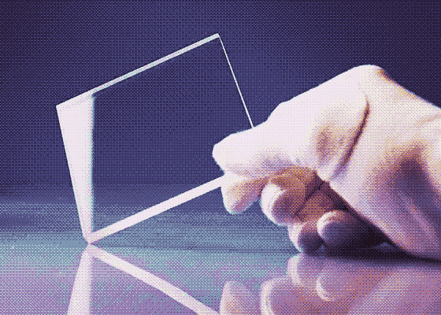

Il s’agit d’un concept de nanostructures inspirées par les ailes du PAPILLON GRETA OTO,
développé en Allemagne au Karlsruhe Institute of Technology.
Le papillon Greta Oto a la remarquable propriété d’avoir des ailes transparentes, il se fait aussi appeler le papillon aux ailes de verre.
Hendrik Hölscher a voulu l’étudier et utiliser la propriété de ses ailes pour
pallier au problème des smartphones quand le soleil se réfléchit sur l'écran et il devient
difficile à voir.
S’inspirer des ailes de papillons pour permettre le confort visuel des usagers et
contribuer à des avancées technologiques, c’est ça l'objectif.

Ce projet est d’autant plus intéressant car cette espèce de papillon est méconnue et que le plus souvent, quand les papillons sont pris comme modèles de biomimétisme on fait plutôt un lien avec leur vol.